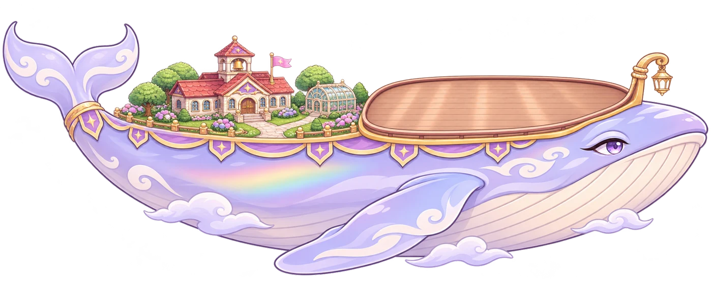
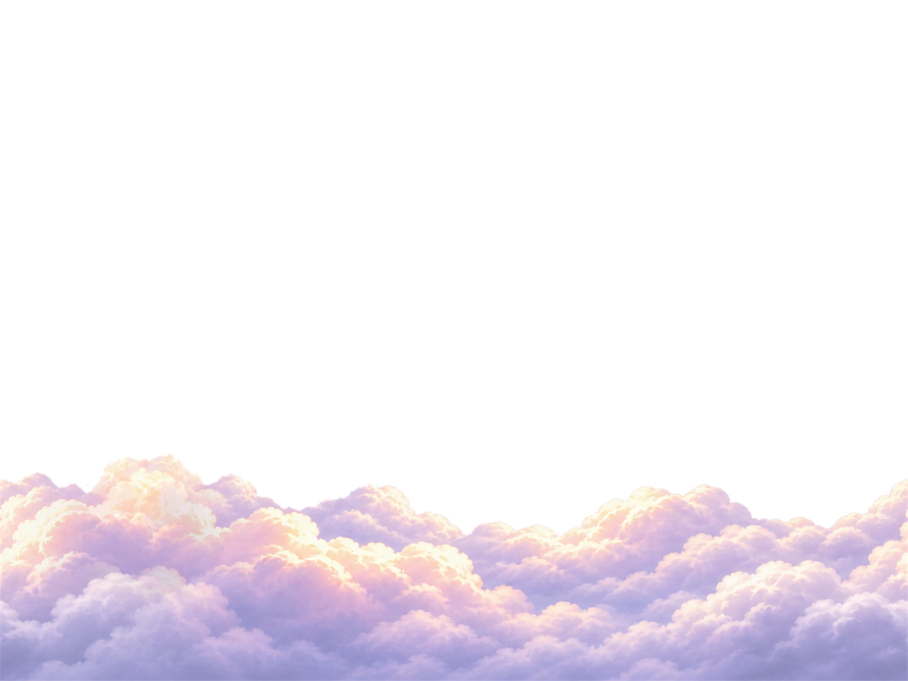
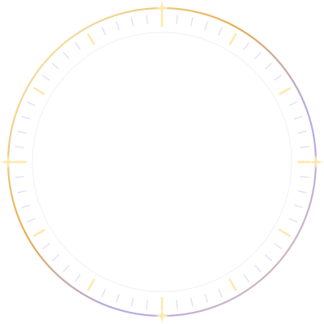
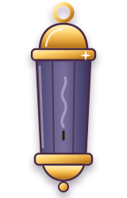

묶음 11 · 시스템 안내 design/feedback70/ui_inventory.html #g11 · D11-1 ~ D11-4
화면마다 A · B · C 를 누르면 「고름」이 붙고, 맨 위 「결과 복사」로 한 번에 복사합니다. 화면 위 상태 단추로 카드에 적힌 상태를 바꿔 볼 수 있고, 주소에 ?w=1600 을 붙이면 1600×720으로 열립니다. 그림은 처음부터 끝 상태로 보이고, 「▶ 다시」를 눌러야 움직임이 재생됩니다. 묶음 규칙: 시스템 안내는 가이드 · 도움말(묶음 7: 스케치북 쪽지 · 단어장 카드 · 작은 리본)과 섞이지 않게 판 결을 화면마다 따로 씁니다 — 절전 = 밤하늘 · 종료 = 진주 종이 말풍선 / 저녁 유리 등불 / 기운 카드 · 저장 손상 = 가죽 일지 / 진주 시스템 카드 / 편지 말풍선 · 실패 = 진홍 공단 리본. 복귀 확인(묶음 3 C 「고래 그림 카드」)과 겹치는 고래 그림 판은 쓰지 않습니다. 정해진 것은 그대로: 유나 알림(YunaToast) · 위 가운데 알림 판 · 뒤로 가기 규칙(종료 창에서 뒤로 한 번 더 = 취소) · 타이틀 키 아트. 글과 값은 게임 그대로(back_nav.gd ask_quit · main.gd _notify_corrupt_save · power_save.gd · economy.gd FAIL_TEXT · warn_clock), 시간 · 바람 조각 수 · 되살린 날짜만 예시입니다.
D11-1 · 방치 절전 화면 scripts/power_save.gd · 방향 「잠든 고래 밤하늘」
조작이 180초 없으면 화면을 덮고 30fps로 내립니다. 아무 곳이나 누르면 돌아오고, 그 누르기는 게임에 넘기지 않습니다. 절전 중에도 수입은 그대로라 「항해는 그대로 이어져요」가 사실입니다. 이야기 · 연출 중(STAGE 없음)에는 「절전한 지 m:ss」 한 줄만 나옵니다.
지금
전투 화면을 84% 검게 덮고 가운데에 흰 확인창과 같은 판(78% 투명)을 띄움. 절전인데 화면 가운데가 가장 밝은 흰 판이라 OLED에서 오히려 빛을 많이 쓰고, 「확인창」처럼 보여 눌러야 할 것 같은 인상. 「절전 중」 꼬리표가 하늘색이라 묶음 색과도 따로 놂.
A · 밤하늘 고래 실루엣 — 화면 전체가 잠든 밤, 고래 등불 하나만 켜짐 추천
비용 중 — 밤하늘 그림 1장(1600×720 JPG 약 50KB) + 기존 고래 · 구름 그림을 셰이더 한 장(흑백 → 남보라 물들이기 + 윗면 달빛 테)으로 밤빛 처리. 정지 그림이라 30fps 절전에도 그릴 것이 거의 없음(고래 흔들림 · 등불 깜빡임만). 화면 대부분이 거의 검은색이라 OLED 전력은 지금보다 적음. 글은 1분마다 몇 px씩 옮겨 화면 잔상을 막아야 함.
정직한 평: 방향 「잠든 고래 밤하늘」을 그대로 그림으로 옮겨 셋 중 가장 「완성된 게임 화면」 같음. 전투 화면이 완전히 가려져 지금 무슨 일이 일어나는지는 글로만 알 수 있음. 실루엣 고래가 화면 한가운데라 짧게 보면 로딩 화면으로 오해할 수 있음 — 맨 아래 「화면을 누르면 돌아와요」가 그 오해를 푸는 유일한 단서.



B · 시계 하나 — 판 없이 큰 숫자와 금 시계 고리만
비용 소 — 시계 고리 SVG 1장 + 초승달 표지 1개(초마다 6° 돎). 판 · 그림이 없어 가장 가볍고, 뒤 전투가 어둡게 비쳐 「게임은 돌고 있다」가 보임. 지금 한 줄인 info 글을 「경과 시간」 · 「STAGE」 · 「바람 조각」 세 칸으로 나눠야 함.
정직한 평: 가장 조용하고 읽기 쉬움 — 멀리서도 「얼마나 쉬었나」가 한눈에. 대신 큰 숫자가 화면 가운데에 계속 같은 자리라 잔상 위험이 셋 중 가장 크고(고리째 천천히 떠다니게 해야 함), 고래 · 분교 같은 게임다운 그림이 없어 「앱 잠금 화면」처럼 담백함.

절전한 지 0:01 STAGE 33 항해 중C · 아래 작은 카드 — 어두운 전투 위, 화면 아래 남색 벨벳 표 한 장
비용 소 — 양끝이 뾰족한 벨벳 표 1장 + 잠든 고래 메달. 지금 코드의 자리(가운데 CenterContainer)만 아래로 옮기고 판 모양을 바꾸면 됨. 밝은 면적이 가장 작아 전력은 셋 중 가장 적음.
정직한 평: 「확인창」 느낌이 사라지고 화면 가운데가 비어 절전답게 보임. 세 줄이 한 판에 다 들어가 정보 손실 없음. 다만 그림 몫이 작아 인상은 약하고, 전투 HUD가 어둡게 다 비쳐 「멈춘 화면」인지 「절전」인지 첫눈에 덜 분명함.
D11-2 · 게임 종료 확인 scripts/back_nav.gd ask_quit · 방향 「배웅」
뒤로 가기로 맨 아래 화면까지 오면 맨 위 층에 뜹니다(타이틀 · 이야기처럼 HUD가 숨은 화면에서도). 뒤로 가기를 한 번 더 누르면 취소, 「종료하기」는 저장한 뒤 끝냅니다. 「최대 8시간」 = main.gd OFFLINE_CAP.
지금
모든 확인창이 쓰는 같은 흰 기운 판(Hud.build_modal) + 보라 이름표 + 취소 / 주황 「종료하기」. 저장 손상 · 복귀 확인과 판이 같아 「무슨 창인지」는 제목을 읽어야 앎. 「8시간 항해」라는 좋은 소식이 본문 둘째 줄에 묻혀 있음.
A · 배웅하는 아이 — 손 흔드는 유나 + 그 아이의 말풍선이 확인창 추천
비용 중 — 타이틀 키 아트의 유나 그림(손 흔드는 자세) 재사용 + 진주 종이 말풍선 판 1종 + 「최대 8시간」 금 칩. 새 그림 없음. 유나는 말풍선 오른쪽(적이 서는 하늘 쪽)에 서서 왼쪽 HUD · 고래 보호막 수치 · 아래 메뉴 · 콤보 글은 1280 · 1600 모두 가리지 않음(가리는 것은 적과 피해 숫자뿐).
정직한 평: 방향 「배웅」을 가장 그대로 살림 — 끄려는 순간에 아이가 손을 흔들어 「다녀와요」 같은 정서가 생기고, 8시간 항해가 고래 그림과 금 칩으로 먼저 눈에 들어옴. 약점: 타이틀 위에서는 키 아트의 유나와 같은 그림이 두 번 보임(어둡게 덮어도 겹쳐 보임), 이야기 위에서는 대사창 인물과 섞여 보일 수 있음.
 게임 종료
게임 종료종료할까요?
고래는 꺼 둔 동안에도 최대 8시간 항해해요.
B · 고래 등불 끄기 — 저녁 유리판에 뱃머리 등불, 「종료하기」를 누르면 불이 꺼짐
비용 중 — 등불 SVG 켜짐/꺼짐 2장(판 윗변 고리에 걸림) + 저녁 유리 질감 1장. 등불이 꺼지는 0.8초를 기다린 뒤 끝내야 해서 종료가 그만큼 늦어짐(저장은 그 사이에). 「▶ 다시」 = 불이 꺼졌다 다시 켜지는 미리보기.
정직한 평: 판 결(어두운 유리 + 따뜻한 불빛)이 다른 확인창과 확실히 달라 「이건 끄는 창」이 첫눈에 구분됨. 은은한 고급감은 셋 중 가장 높음. 대신 사람(아이)이 없어 「배웅」 정서는 약하고, 어두운 판 위 글이라 밝은 전투 화면 위에서 대비는 좋지만 타이틀처럼 밝은 키 아트 위에서는 판만 무겁게 떠 보임.

종료할까요?
고래는 꺼 둔 동안에도 최대 8시간 항해해요.
C · 작은 확인 카드 — 기운 진주 카드 한 장, 가장 짧게
비용 최소 — 판 1종(기운 진주 종이 + 금 옆면 두께 + 라벤더 머리 띠) + 금 메달 1개. 지금 build_modal 자리 · 크기를 줄이고 판만 바꾸면 끝. 움직임 추가 없음.
정직한 평: 가장 빠르고 방해가 적음 — 자주 끄는 사람에게는 이게 가장 편함. 금 메달 · 카드 두께 · 「최대 8시간」 금 밑줄로 지금보다 한 단계 고급스러워졌지만, 여전히 지금 창을 작게 다듬은 것에 가까워 「배웅」 방향은 거의 살지 않고, 다른 확인창(복귀 · 저장 손상)과도 판 결이 가까워 세 창이 비슷해 보일 위험이 남음.
D11-3 · 저장 손상 안내 scripts/main.gd _notify_corrupt_save · 방향 「차분한 시스템 카드 — 되살린 날짜 · 무엇이 사라졌는지」
시작할 때 한 번, 출석 · 항해일지보다 먼저 뜹니다(QA R50). 「확인」뿐이고 닫은 뒤 스테이지 · 출석이 이어집니다. 되살린 날짜 · 스테이지는 백업 파일에서 읽은 값(예시), 손상된 파일은 save.json.corrupt-날짜로 기기에 남습니다.
지금
종료 확인과 똑같은 흰 판 + 주황 「확인」. 네 줄이 같은 크기 · 같은 색이라 가장 중요한 「되살린 날짜」와 「그 뒤는 사라졌을 수 있어요」가 다른 줄과 구분되지 않음. 주황 단추가 「좋은 일」처럼 보여 분위기도 어긋남.
A · 일지의 찢긴 쪽 — 펼친 가죽 일지, 되살린 날 다음 쪽이 찢겨 나감
비용 중 — 가죽 · 종이 질감 2장 + 찢긴 끝 마스크 + 책갈피 · 밀랍 봉인 SVG + 찢긴 쪽 밑장(그림자 · 고래 잉크 스케치 · 지워져 가는 글줄 · 떨어진 종이 조각 2개). 날짜와 스테이지를 따로 받아야 해서 save_restored 글을 두 값으로 나눠야 함(코드 한 줄). 판이 808px로 셋 중 가장 큼.
정직한 평: 「어디까지 남았고 무엇이 사라졌나」가 그림 하나(찢긴 쪽)로 설명되어 가장 직관적이고 기억에 남음. 위험: 항해일지(묶음 2 방치 보상 팝업)와 「일지」라는 소재가 겹쳐, 시작할 때 이 창 다음에 항해일지가 이어 뜨면 둘이 같은 책처럼 읽힐 수 있음. 찢긴 종이가 「잃어버렸다」를 강하게 말해 처음부터 상태에서는 다소 아프게 느껴짐.
예전 저장으로 되돌렸어요
저장 파일이 손상되어
예전 백업에서 이어 가요.
보관해 두었어요.
여기서 이어 가요
!그 뒤의 진행은
사라졌을 수 있어요.
B · 단정한 시스템 카드 — 되감기 방패 + 사실 네 줄 추천
비용 소 — 진주 카드 판 1종 + 방패 아이콘 1개 + 표(줄 넷). 지금 본문을 「무엇 | 값」 표로 나누는 일(글은 그대로). 다른 확인창과 판이 다르도록 모서리를 대각(둥근 · 각진)으로 둠.
정직한 평: 방향 「차분한 시스템 카드」에 가장 정확함. 되살린 날짜 · 스테이지 · 사라졌을 수 있는 것 · 보관한 파일이 줄마다 갈려 고객 문의 때도 그대로 읽어 줄 수 있음. 감정 표현은 없음 — 드물지만 신뢰가 걸린 화면이라 그게 장점. 약점: 그림 몫이 방패 하나뿐이라 셋 중 가장 「시스템」스럽고 게임 개성은 적음.
예전 저장으로 되돌렸어요
- 되살린 저장
- 2026년 11월 10일 21:40
- 이어 갈 곳
- 스테이지 31
- 사라졌을 수 있는 것
- 그 뒤의 진행
- 이어 갈 곳
- 처음부터 시작해요
- 손상된 파일
- 기기에 보관해 두었어요
C · 유나 사과 — 책을 끌어안은 유나 + 편지 말풍선, 사실은 붙인 쪽지에
비용 소 — 유나 감정 그림(슬픔) 재사용 + 편지 말풍선 판 1종 + 쪽지. 유나 대사 두 줄은 새로 써야 함(시안 글: 「미안해요…」). 사실 세 줄은 지금 글 그대로.
정직한 평: 같은 나쁜 소식이 가장 부드럽게 전해지고, 쪽지에 사실이 따로 있어 정보도 빠지지 않음. 위험: 게임 잘못(저장 손상)을 캐릭터가 사과하는 것이 귀여움으로 넘기려는 느낌을 줄 수 있고, 시작하자마자 큰 유나가 한 번 더 나오면 곧 이어지는 출석 · 항해일지 창과 합쳐 「창이 너무 많다」로 느껴질 수 있음.
미안해요…저장 파일이 손상돼서 예전 백업에서 이어 가요.
되살린 저장2026년 11월 10일 21:40 · 스테이지 31
사라진 것그 뒤의 진행은 사라졌을 수 있어요.
손상된 파일손상된 파일은 기기에 보관해 두었어요.
D11-4 · 비전투 알림 띠 (구매 실패 · 기기 시간 확인) scripts/economy.gd tell · warn_clock → hud.banner · 방향 「경고 리본」
지금은 전투 띠(정화 · 보스)와 같은 큰 띠에 빨간 글자. 실패한 단추는 보통 미리 꺼지므로(덧칠 · 강화는 모자라면 회색) 이 알림은 서버가 거절했거나 값이 막 바뀐 드문 경우에 뜹니다. 장비 작업대(무지개 덧칠 = 채색석 · 잠재 덧칠 = 색가루 · 신화 승격 = 재료) · 상점 결제(서버) · 입장할 때 기기 시간. 글은 FAIL_TEXT · warn_clock 그대로.
지금
화면 위쪽 가운데의 큰 크림 띠 + 44px 빨간 글자가 1.4초. 전투 연출 띠와 같은 판이라 「실패」가 「축하」와 같은 무게로 크게 뜨고, 누른 단추와 멀리 떨어져 무엇이 안 됐는지 이어지지 않음. 메뉴가 열려 있으면 메뉴 아래에 깔려 거의 안 보임.
A · 붉은 리본 — 누른 단추 바로 위, 금 핀이 꽂힌 진홍 공단 리본 추천
비용 소 — 리본 3조각(왼끝 · 늘어나는 몸 · 접힌 제비꼬리) + 금 경고 핀 + 아래 뾰족 꼬리. 자리는 YunaToast.tap_at(마지막 누른 곳)을 그대로 씀. 누른 단추에 붉은 테 0.6초. 기기 시간은 누른 단추가 없어 위 HUD 아래 가운데에 두 줄 리본.
정직한 평: 방향 「경고 리본」 그대로 — 단추 바로 위에 꼬리가 단추를 찔러 「이게 안 됐다」가 자리로 이어짐. 진홍 공단 결이라 빨강이지만 싸구려 경고창 같지 않음. 약점: 묶음 7의 「장비 분해 작은 리본」(D7-4 B)과 「리본」이라는 꼴이 겹쳐, 둘 다 고르면 성공 · 실패가 색으로만 갈림 — 여기 리본은 금 핀 · 진홍 · 아래 꼬리로 구분했음. 재료 부족 글은 31자라 리본이 470px로 김.
B · 완료 알림(YunaToast)과 같은 자리 · 색만 다름 — 붉은 테 유나 말풍선
비용 최소 — 이미 있는 YunaToast 「막힌 일」(회색 풍선 + 땀방울)의 테 색만 진홍으로. economy.tell에서 hud.banner 대신 YunaToast.pop(…, false, false) 한 줄. 자리 규칙(메뉴 위 = 누른 곳 위 · 전투 중 = 위 가운데)도 그대로.
정직한 평: 가장 싸고 게임 전체 알림 말투가 하나로 모임 — 「유나가 알려 줌」이 성공 · 실패 모두에 통함. 대신 얼굴 + 말풍선이 커서 장비 작업대처럼 단추가 몰린 곳에서는 옆 칸(잠재 줄)을 가리고, 「안 됐다」가 색(붉은 테)으로만 갈려 색맹 · 작은 화면에서는 성공 알림과 헷갈릴 수 있음.
C · 단추 흔들림 + 말풍선 — 누른 단추가 좌우로 떨고 그 위에 뾰족 꼬리 말풍선
비용 소 — 단추마다 흔들림(0.5초) + 붉은 테 말풍선 1종. 단추 노드를 알아야 해서 tell(res)에 「누른 단추」를 넘겨야 함(부르는 곳 6군데 수정). 기기 시간은 누른 단추가 없어 정해진 「위 가운데 알림 판」으로 보냄.
정직한 평: 「안 됨」을 몸으로 느끼게 해 가장 빨리 알아챔 — 모바일 게임에서 익숙한 문법. 말풍선이 작아 화면을 가장 덜 가림. 약점: 흔들림은 움직임이라 정지 화면(그리고 움직임 줄이기 설정)에서는 붉은 테만 남아 힘이 빠지고, 기기 시간만 다른 부품으로 떠서 다섯 상태가 한 식구로 보이지 않음.